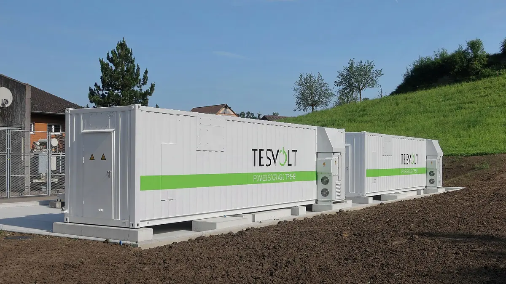

Splitting a battery fleet's revenue with dual prices
Two batteries sell more reserve capacity together than apart. The dual prices of the fleet's linear program split the sale so that no owner, and no group of owners, earns more by leaving.
An energy company pools batteries from different owners into one fleet, a virtual power plant, and sells the fleet’s capacity on the reserve market. On that market the grid operator pays for power kept ready to balance the grid, and it pays the fleet as a whole. Every month someone at the company splits the money between the owners and has to be able to explain the split to each of them.
The evening hour
The fleet in this post has two batteries that each hold 1 MWh. Battery A sits at a solar park and is 90 % full after a sunny afternoon. At a factory, battery B has run down to 20 % after covering the factory’s peak demand.


In the evening the fleet sells FCR-N (Frequency Containment Reserve for Normal operation), a reserve that Fingrid, the Finnish grid operator, buys to keep the grid at 50 Hz. The fleet’s bid is the number of MW it offers for the hour. FCR-N is symmetric: one bid sells both directions, and the market pays for being ready. Every MW of the bid has to be ready both to discharge into the grid when the frequency drops and to charge from it when the frequency rises. Nobody knows in advance which will come. The fleet has to be able to deliver the full bid for 60 minutes in either direction [1].
Upward reserve means discharging, and downward reserve means charging. An hour at 1 MW takes 1 MWh of charge to discharge and 1 MWh of empty space to charge, so each MW of the bid needs both. A battery sells the smaller of the two. A full battery sells nothing, and a half-full one sells the most, 0.5 MW.
In a fleet, the company’s control system spreads each discharge over the charge of all the batteries and each charge over all their empty space. The fleet then sells the smaller of its total charge and its total space. Pooling adds no energy. It pairs one battery’s spare charge with another’s spare space. Here A can cover the drops and B most of the rises. Figure 2 draws both rules on the evening hour’s charges.
Fingrid allows this pooling. Before a battery may sell FCR-N, Fingrid tests and approves it, and batteries at different sites can be approved together as one providing group. The group as a whole has to meet the technical requirements, and no battery in it has to meet them on its own. In FCR-N every battery in the group must also have the same balance responsible party, the company that answers for the group’s energy imbalances [1]. Here the company running the fleet takes that role. The post also assumes that the batteries charge and discharge fast enough that their energy in MWh is the limit and their power in MW never is.
The market pays a price per MW for each hour, so splitting the money is the same as splitting the 0.9 MW. Every payment in this post is counted in MW of the sale. The month’s split is the sum of its hours’ splits. The question is who gets the extra 0.6 MW that neither battery could sell alone. The solar park’s owner points at the fleet’s charge bar, nearly all of it A’s. The factory’s owner answers that the fleet ran out of space before it ran out of charge, and nearly all of that space is B’s.
A natural first guess is a pro-rata split, which pays each battery in proportion to its charge, the energy it brings to the fleet. In the demo below, each row splits the fleet’s sale between A, counted from the left, and B, counted from the right. The top row puts what each battery sells alone at its own end. A split keeps both owners in the fleet when neither gets less than that, and the green band between the two ends marks those splits. Set the charges with the first two sliders and your own split with the third, and watch where the pro-rata split falls as the charges change. Leave the box under the sliders unticked until the theory section.
With the starting charges, pro rata gives A 0.74 MW and B 0.16 MW. B sells 0.2 MW on its own, so the factory’s owner would take B out of the fleet. For A the band runs from the 0.1 MW it sells alone up to 0.7 MW, where B is left with its own 0.2 MW. A split by own sale, in proportion to what each battery sells alone, gives A 0.3 MW and B 0.6 MW, inside the band. With two batteries that rule always stays inside, because the pair never sells less than the two apart.
Dual prices
Notation used in this post
| Symbol | Meaning |
|---|---|
| Charge of battery in MWh, also its upward capacity in MW | |
| Empty space of battery in MWh, its downward capacity in MW | |
| A group of batteries | |
| MW the group sells on its own | |
| MW of the fleet’s sale credited to battery | |
| The fleet’s bid in MW | |
| Dual prices of one MWh of charge and one MWh of space, in MW of the sale |
The core
Write for the MW that a group of batteries sells on its own, such as the 0.9 MW of the evening hour’s pair. With the charge of battery in MWh,
and the solid lines in Figure 2 mark its values in the evening hour:
Game theory calls a setting like this a cooperative game. The owners are the players, and is what each group of them can get on its own. A split credits battery with MW of the fleet’s sale, and the green band in the demo holds the splits with
These splits form the core of the game. With more batteries, a group of owners can also leave together and sell on its own. A split is in the core when every group gets at least what it sells on its own and the shares add up to the fleet’s sale:
The fleet as a linear program
In the evening hour the fleet chooses its bid in MW, limited by its total charge and its total space, the two fleet bars in Figure 2:
A linear objective maximised under linear limits is called a linear program. The best bid is 0.9 MW.
Prices for charge and space
Every linear program has a second one, called its dual, with a price for each limit of the first. Here is the price of a MWh of charge and the price of a MWh of space, both counted in MW of the sale:
The objective is what the fleet’s charge and space are worth at these prices. The limit says that the MWh of charge and the MWh of space behind one MW of the bid are worth at least that MW. Every pair of prices that meets the limit gives an upper bound on the bid. Strong duality says that the lowest bound equals the best bid [2]. Here the cheapest prices are and , since
The cheapest prices also say what a little more of each resource is worth. With 0.1 MWh more space the fleet could sell 0.1 MW more, until space reaches the 1.1 MWh of charge, a gain of MW per MWh. More charge adds nothing while 0.2 MWh of it is spare, and . Prices with this meaning are called shadow prices.
The dual split is in the core
The dual split pays each battery for its own charge and space at the cheapest prices:
With and , each battery is paid for its space bar in Figure 2: 0.1 MW to A and 0.8 MW to B, together the 0.9 MW sale. A gets the 0.1 MW it sells alone and B more than its 0.2 MW, so the split is in the core, on the left edge of the band. Tick the box under the sliders of Figure 3 to see it, then move the charges.
For any charges the dual has the same limit, with the fleet’s total charge and space in place of 1.1 and 0.9, so the cheapest prices add up to 1. A battery’s pay is then a weighted average of its charge and its space. An average is never below the smaller of the two numbers, and the smaller one is what the battery sells alone. The same holds for any group of batteries. Strong duality makes the payments add up to the fleet’s sale. Owen proved that this split is in the core for every linear production game [3]. In such a game, owners pool resources, and a group sells the most that its pooled resources allow under linear limits.
A solver returns the prices together with the best bid. The cell below writes the evening hour’s program in CVXPY, a Python optimisation library, reads and from the solver, and pays each battery.
= # charge of A and B, MWh
= # the fleet's bid, MW
= <=
= <=
=
= # price of a MWh of charge
= # price of a MWh of space
= * + * # the dual split
bid: 0.90 MW prices: charge 0.00, space 1.00 dual split: A 0.10 MW, B 0.80 MW
With more limits, such as each battery’s power or several hours in a row, there are more prices than and , and the solver finds them the same way.
Summary
Two batteries sell more together than apart because one battery’s charge pairs with the other’s space. Pro rata can pay an owner less than its battery sells alone. The fleet’s sale is a linear program. Its dual puts a price on each MWh of charge and space, equal to what a little more of it would add. Paying every battery for its own charge and space at those prices gives a split in the core (Owen).
What to read next:
- Owen [3], for the theorem and its proof.
- Bertsimas and Tsitsiklis [2], chapter 4, cover duality and shadow prices.
- Shapley [4] defines the best-known other split. It averages what each battery adds over every order in which the batteries could join.